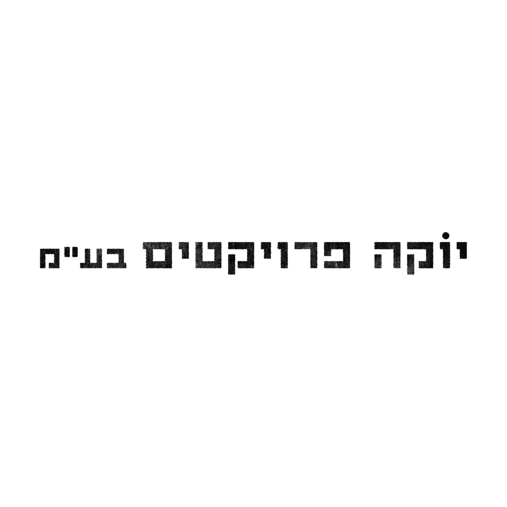
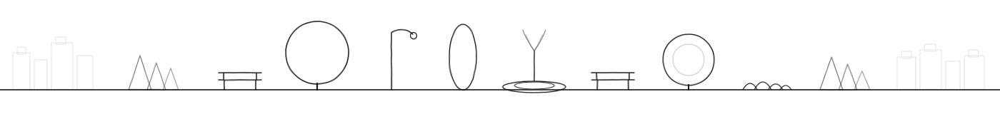

YOKA PROJECTSDevelopment and operation of places that shape the environments where people live
It all starts with a place
People will always want to leave the house, to see, to meet, to experience, to be part of something. That was true before us, and it will remain true after us.
As the world becomes more digital, the physical place becomes more meaningful. That is why we will always need places for people. We build them.
Programming creates value → Value creates movement → Movement creates revenue
We are a team from different disciplines — entrepreneurship, management, architecture, design, content, finance, and technology. Together we complete the puzzle that brings a vision down to the ground and turns an idea into reality.
Our work focuses on developing places for people to stay and to act. Places where people come to be, work, create, train, learn, meet, and spend time. We work across spaces for work and creation, sports activities, culture, community, commerce, and services — and the connections between them. We build the platform — the place, the structure, and the system that enables activity to happen. We shape the content and the program, and the people who come ultimately shape the place and bring it to life.
A deep understanding of the place — its history, structures, surroundings, and needs — leading to the definition of its central idea. That idea is translated into a program of uses, spatial distribution, and key anchors that generate movement, activity, and economic value. The process combines spatial planning, design thinking, and business strategy until the core concept and the uses that define the place become clear.
Translating the concept and program into detailed planning and the physical realization of the place. Coordinating design and construction processes, building budgets and financial frameworks, shaping content and activities, and working with suppliers and professional teams. Throughout the process the guiding concept of the project is maintained, allowing the idea to take form in the physical environment and become a built place ready for activity.
Operating the place and implementing the working methods developed in earlier stages. Building teams, connecting operators and partners, and managing the day-to-day activity of the place, while continuously learning and adapting through real use. In this way the place continues to function, evolve, and generate movement and economic activity over time.
Every place has its own needs and pace. We work with developers, real estate companies, municipalities, institutions, and organizations — anyone looking to create value from a physical place. Projects may involve independent buildings, public buildings, heritage structures, campuses, community centers, cultural institutions, or complex mixed-use environments. The uses we develop often combine work and commerce, housing, and public activity — sometimes within broader mixed-use frameworks. Our level of involvement varies by project: targeted consulting, ongoing advisory work, development of a defined project, or full management and operation through agreements or partnerships. Each place requires its own model, and that model is developed together. In every case, the work is approached with an entrepreneurial mindset.
Haifa, Israel
A neglected intersection at the heart of Haifa's historic Hadar neighbourhood transformed into a 4,000 sqm civic square. The project involved rerouting traffic, burying utilities, and designing new public seating, planting, and lighting in collaboration with the municipality and local residents.
Inquire →Tel Aviv, Israel
Continuation of the northern Yarkon riverfront promenade — 1.2 km of new pedestrian pathway, cycling infrastructure, native planting, and public art installations. Managed across four simultaneous contractor teams with zero disruption to the adjacent park.
Inquire →Beersheba, Israel
A 600-metre cultural corridor connecting the old city to the new civic centre. New paving, heritage interpretation elements, pop-up event infrastructure, and shade structures, delivered under a tight 14-month municipal timeline.
Inquire →